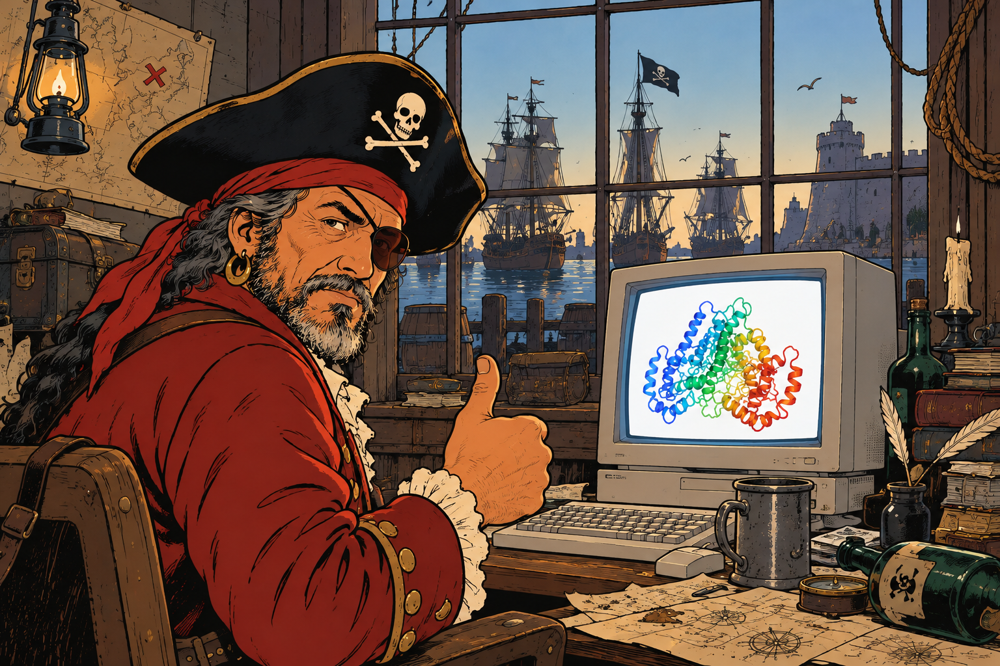
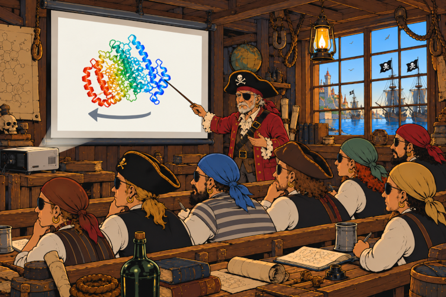
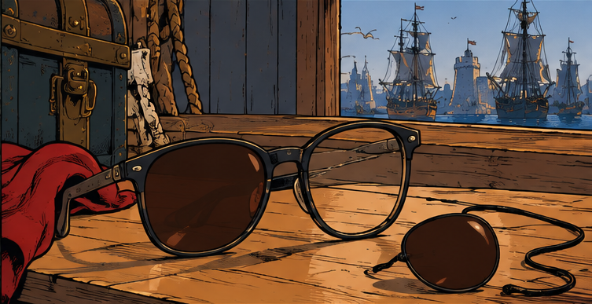
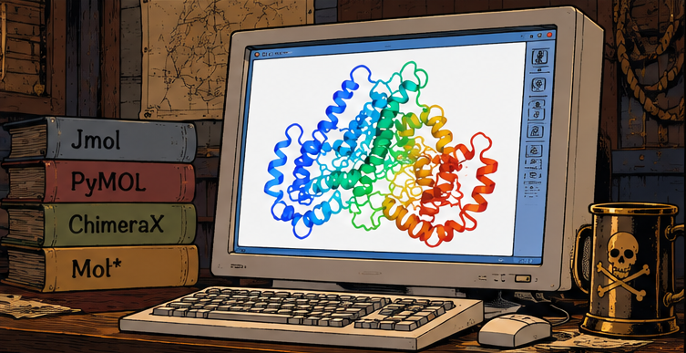
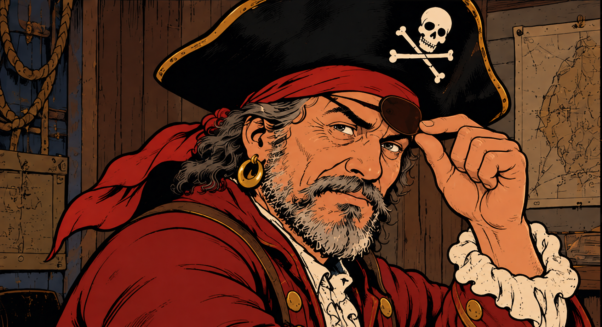

Pirate Vision is an emerging vintage technology that exploits the Pulfrich effect for viewing molecular structures (e.g. protein structures) in 3D.
Basic idea - open a molecular structure in some viewer, set the animation to spin, cover one eye with a filter (e.g. put on sunglasses with one lence removed), and experience the 3D perception.
Spinning direction matters: if your left eye is covered - spin left, if your right eye is covered - spin right.

It is called Pirate Vision because when one of your eyes is covered, you look like a pirate.
This page describes how to setup and use Pirate Vision with some popular molecular viewers.
Just break some sunglasses and try it!
Sunglasses that cover only a single eye. For example, ordinary sunglasses with one lense removed. Or a tintend monocle.

Molecular viewer software (not necessarily pirated, can be free or even legally purchased) able to do spinning animation.

Both eyes (apologies to real pirates with just a single eye).

This section explains how to use Pirate Vision with the following popular molecular viewers:
JMol is compatible with Pirate Vision out of the box - it has the spin command that can be used.
Just load or fetch a structure, for example
load =2zskSetup the view in any way you wish (it also can be adjusted an any time later). It is recommended (but not super necessary) to set the background to white:
background whiteThen, run the spin command, prividing speed (angles per second) as the only parameter.
Pirates with a filter on the left eye should run spin with negative speed, for example:
spin y -90Pirates with a filter on the right eye should run spin with positive speed, for example:
spin y 90To stop, run:
spin offFirst, let’s define the pirate command.
Paste the following command to the Pymol command prompt:
python
from pymol import cmd, util
def pirate(speed=90):
speed = float(speed)
if speed == 0:
cmd.mstop()
return
fps = cmd.get_setting_float('movie_fps') or 30
frames = max(2, round(360 * fps / abs(speed)))
cmd.mstop()
cmd.mset(f"1 x{frames}")
util.mroll(1, frames, 1, '-y' if speed > 0 else 'y')
cmd.set('movie_loop', 1)
cmd.mplay()
cmd.extend('pirate', pirate)
python endAlternatively, download the pymol_pirate_vision.py script and run it:
run pymol_pirate_vision.pyThen load or fetch a structure, for example:
fetch 2zskSetup the view in any way you wish (it also can be adjusted an any time later). It is recommended (but not super necessary) to set the background to white:
bg_color whiteThen, run the pirate command, prividing speed (angles per second) as the only parameter.
Pirates with a filter on the left eye should run pirate with positive speed, for example:
pirate 90Pirates with a filter on the right eye should run pirate with negative speed, for example:
pirate -90To stop, run pirate with zero speed:
pirate 0First, let’s define the pirate command, using the following script:
from chimerax.core.commands import CmdDesc, FloatArg, register, run
from chimerax.core.errors import UserError
def pirate(session, speed=90):
try:
run(session, "perframe stop")
except UserError as e:
if "No per-frame command active" not in str(e):
raise
if speed != 0:
run(session, f'perframe "turn y {-speed / 60}"')
register(
'pirate',
CmdDesc(
optional=[('speed', FloatArg)],
synopsis='Spin the molecule for Pirate Vision'
),
pirate,
logger=session.logger
)Download this script as chimerax_pirate_vision.py and run it:
open chimerax_pirate_vision.pyThen load or fetch a structure, for example:
open 2zsk.cifSetup the view in any way you wish (it also can be adjusted an any time later). It is recommended (but not super necessary) to set the background to white:
set bgColor whiteThen, run the pirate command, prividing speed (angles per second) as the only parameter.
Pirates with a filter on the left eye should run pirate with positive speed, for example:
pirate 90Pirates with a filter on the right eye should run pirate with negative speed, for example:
pirate -90To stop, run pirate with zero speed:
pirate 0Mol* is compatible with Pirate Vision out of the box - just not through scripting, but from GUI,
Open a molecular structure in Mol*, for example, PDB 2ZSK.
Open the “Settings/Control Info” panel (the settings icon on the right border of the 3D scene, near the upper-right corner).
Under “Animate”, select “Spin”.
Using the config button that appears near near the selected Spin option, configure the spinning parameters:
[0, 1, 0]) for pirates with a filter on the right eye, or to ([0, -1, 0]) pirates with a filter on the right eye.The background can also be changed to white in the same settings panel.
To stop spinning, change “Animate” to “Off”.
Alternatively, press i to toggle spinning on or off - but the axis and the speed are preset when spin is toggled with i.